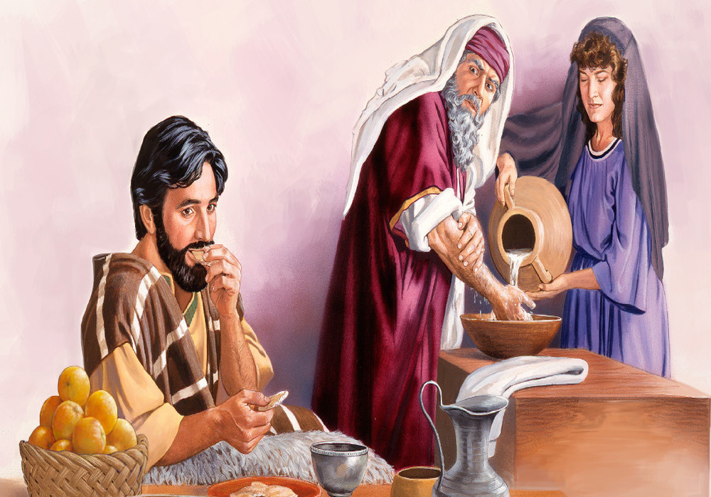
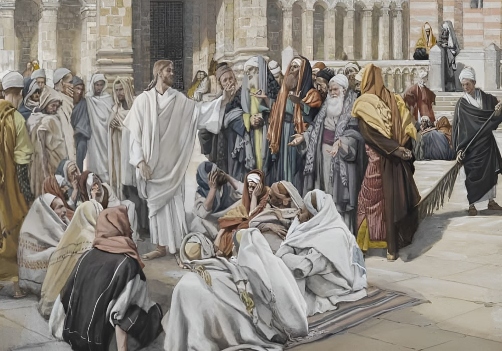

Traditions And Commandments
Then came to Jesus scribes and Pharisees, which were of Jerusalem, saying,
Why do thy disciples transgress the tradition of the elders? for they wash not their hands when they eat bread.
But he answered and said unto them, Why do ye also transgress the commandment of God by your tradition?
For God commanded, saying, Honour thy father and mother: and, He that curseth father or mother, let him die the death.
But ye say, Whosoever shall say to his father or his mother, It is a gift, by whatsoever thou mightest be profited by me;
And honour not his father or his mother, he shall be free. Thus have ye made the commandment of God of none effect by your tradition.
Ye hypocrites, well did Esaias prophesy of you, saying,
This people draweth nigh unto me with their mouth, and honoureth me with their lips; but their heart is far from me.
But in vain they do worship me, teaching for doctrines the commandments of men.
And he called the multitude, and said unto them, Hear, and understand:
Not that which goeth into the mouth defileth a man; but that which cometh out of the mouth, this defileth a man.
Then came his disciples, and said unto him, Knowest thou that the Pharisees were offended, after they heard this saying?
But he answered and said, Every plant, which my heavenly Father hath not planted, shall be rooted up.
Let them alone: they be blind leaders of the blind. And if the blind lead the blind, both shall fall into the ditch.
Then answered Peter and said unto him, Declare unto us this parable.
And Jesus said, Are ye also yet without understanding?
Do not ye yet understand, that whatsoever entereth in at the mouth goeth into the belly, and is cast out into the draught?
But those things which proceed out of the mouth come forth from the heart; and they defile the man.
For out of the heart proceed evil thoughts, murders, adulteries, fornications, thefts, false witness, blasphemies:
These are the things which defile a man: but to eat with unwashen hands defileth not a man.
Matthew 15:1-20
- 
- 